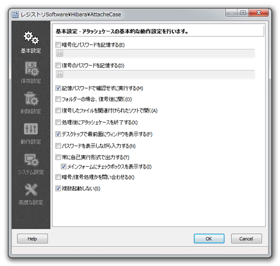

アタッシェケースの起動や、動作に関する基本的な設定を行えます。

暗号化する際のパスワードを記憶しておくことで、 ファイルをドラッグ＆ドロップした際にパスワード入力無しで暗号化することができます。
もちろんパスワード自体は暗号化され、あなたのＰＣに保存されます。
ただし、「空白（文字が何も入力されていない状態）」での記憶はできません。 通常の暗号化の際には「空白」のパスワード指定が可能ですが、 空白をパスワードとして「記憶させる」ことはできません。 これはセキュリティーを考慮しての仕様です。
暗号化したデータを自分のＰＣ間で持ち運ぶだけで、 ＰＣ上ではファイルを自由に運用したいというときに便利です。 しかし、記憶パスワードが暗号化されるとはいえ、ＰＣ上に記憶されるので、 セキュリティーは万全ではないことを留意してください。
同様に復号の際のパスワードを記憶します。
むしろ、暗号化の際だけ記憶しておき、復号化の際は記憶せず「手入力」にしておけば、 割にセキュリティーを保ちつつ簡便にファイルの管理ができるようになります。
Tips!
暗号化/復号パスワード欄に直接、ファイルをドラッグ＆ドロップすることで、
そのファイルのSHA-1ハッシュ値をパスワード文字列として記憶することもできます。
"\*"が表示されている（暗号化、復号それぞれの）パスワード文字列欄へ任意のファイルを直接ドラッグ＆ドロップします。
パスワード文字列には、そのファイルのSHA-1ハッシュ値が記憶されます。
暗号化パスワードを「ファイル」で記憶しておいて、復号時にパスワードファイルを直接ドラッグ＆ドロップしたいという場合に設定します。
チェックをすると入力された記憶パスワードで、確認を行わず即座に暗号/復号処理へ移行します。
記憶パスワード入力があり、チェックを外した場合は、 テキストボックスにパスワードが入力された状態でいったん処理が止まります。 その際に、元ファイルの削除、実行形式出力選択を行うことができます。
チェックすると、Explorerで復号化したフォルダを開きます。
復号化した後、単一のファイルであれば、そのまま関連付けられたアプリケーションソフトで開きます。
チェックすると、暗号／復号化を行った後にアタッシェケースを終了します。
チェックを外すと、他のアプリウィンドウに隠れるようになります。 通常のアプリケーションウィンドウと同じスタイルにしたい場合にチェックを外してください。
チェックを入れると、パスワード入力の際に、「********」などと隠さずに パスワード文字列を確認しながら入力することができます。
チェックを入れると、暗号化ファイルは常に自己実行形式（*.exe）で出力されるようになります。
チェックを入れると、メインウィンドウに「実行形式出力」のチェックボックスが表示されます。
ファイルを暗号化するときに、実行形式にするかどうかを選択できます。
通常、アタッシェケースは投げ込まれたファイルまたはフォルダを自動で判断して、 暗号か復号かの処理を決定しています。 しかし、このオプションにチェックを入れることで処理開始時に問い合わせることができます。
「暗号化」が選択されれば、暗号化ファイル（*.atcなど）を除いたファイル/フォルダを選んで処理します。
「復号化」が選択されれば、逆に投げ込まれたファイル/フォルダから、暗号化ファイルだけを選んで処理します。
チェックを外すと、アタッシェケースを複数起動することができます。 複数のファイルを同時並行で処理したいときなど便利です。 たとえば既にアタッシェケースを起動した状態で、 ショートカットアイコンへファイルなどをドラッグ＆ドロップすると、もう一つのウィンドウが立ち上がり、 そちらで別途処理されることになります。
Copyright© 2002-2018 M.Hibara, All rights Reserved.